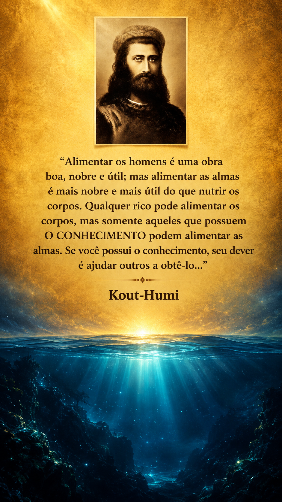

"Há um oceano oculto além do olhar comum,O Grande Mar
Onde a matéria se funde e o universo é um.
Nutrir o corpo cessa a fome do momento,
Mas saciar a alma exige o sagrado CONHECIMENTO.
Nas águas da memória, a ancestralidade deita,
E na geometria quântica, a mente se liberta.
Navegue no invisível, desperte o criador,
Pois quem expande a alma, espalha luz e amor." Portal da Sabedoria